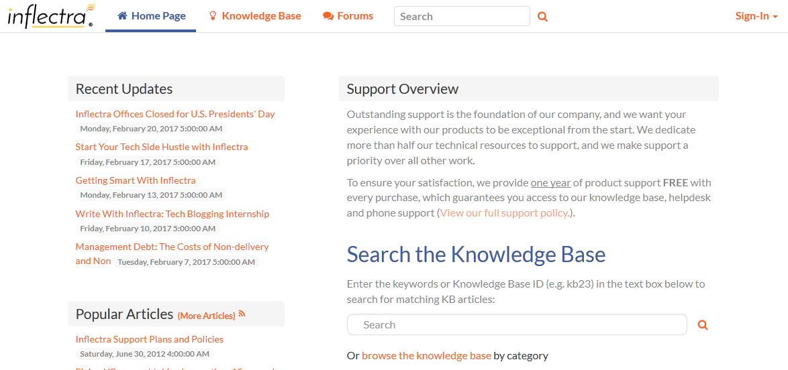

Configuring and Customizing
You have now tried out KronoDesk both as a user viewing the knowledge base and forums, as a customer submitting a help desk ticket, and as a manager. This section describes the steps needed to configure the system for real use by your organization.
To perform the configuration, you will need to login as the Administration using these credentials:
-
Login: administrator
-
Password: PleaseChange
Once you have successfully logged-in, click on the Administration menu item to bring up the Administration home page:

There are many different areas you can configure in the Administration section. For example, you can customize the different ticket types, statuses, and priorities, you can enter the various products, forums and article categories you will need.
You can also disable sections of KronoDesk that you won't be using (for example, some of our customers don't need a public forum). These are all described in more detail in the KronoDesk Administration Guide.
The next sections will illustrate a couple of important setup steps that you will need to perform before you start using KronoDesk for real.
Configure Branding
Under System Settings > Appearance, you will have two tabs. The first tab, 'Appearance', will let you select one of the pre-installed themes, or edit a theme to customize the applications appearance to match your company color scheme. The edit theme page will let you set various colors for different parts of the application:

The second tab, 'Branding', will let you set certain text and page names. In this section you should change the name of the site from 'KronoDesk' to your company name, enter in the email address, phone number and other information that you'd like to describe your support site.
This page lets you change the color scheme of KronoDesk, upload your company logo (full size image for desktop devices and a smaller icon for use on the mobile version) and generally change how it will look.
For example, we use KronoDesk ourselves and we have rebranded it as follows:

Remove Sample Data & Start Using
Finally, once you are ready to start using KronoDesk, you will want to delete all of the sample categories, products, forums, threads, articles, help desk tickets and users, and then create your own categories and settings.
To do that, go to 'System Settings > Remove Sample Data'. Click on the 'Remove Sample Data' button to confirm your decision:

Congratulations, you are now ready to use KronoDesk. You can now add users, products and forums.
For more information about any of the features, please refer to the KronoDesk User Manual or the KronoDesk Administration & Install Guide.